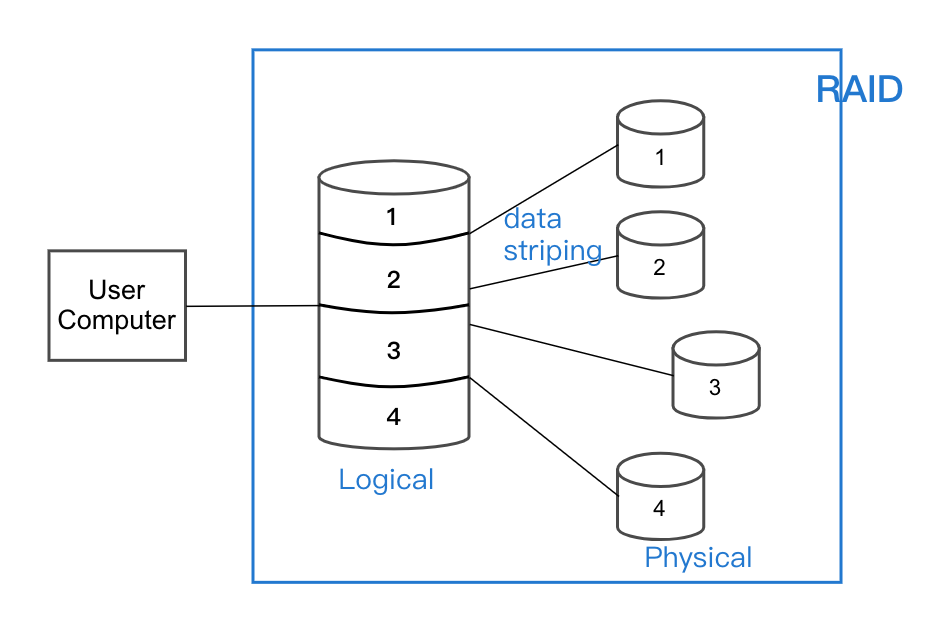
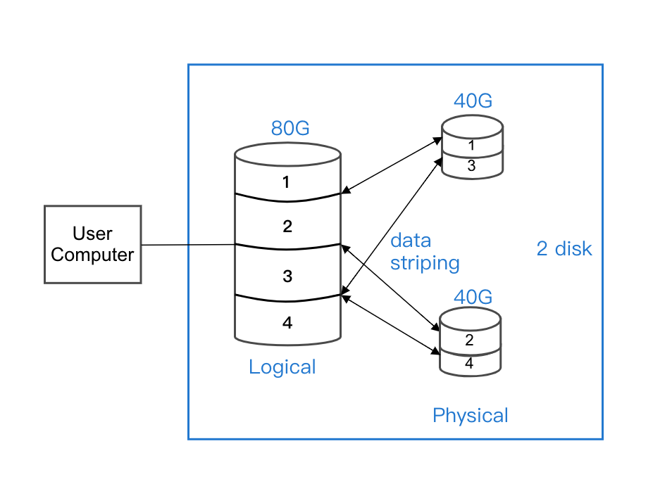
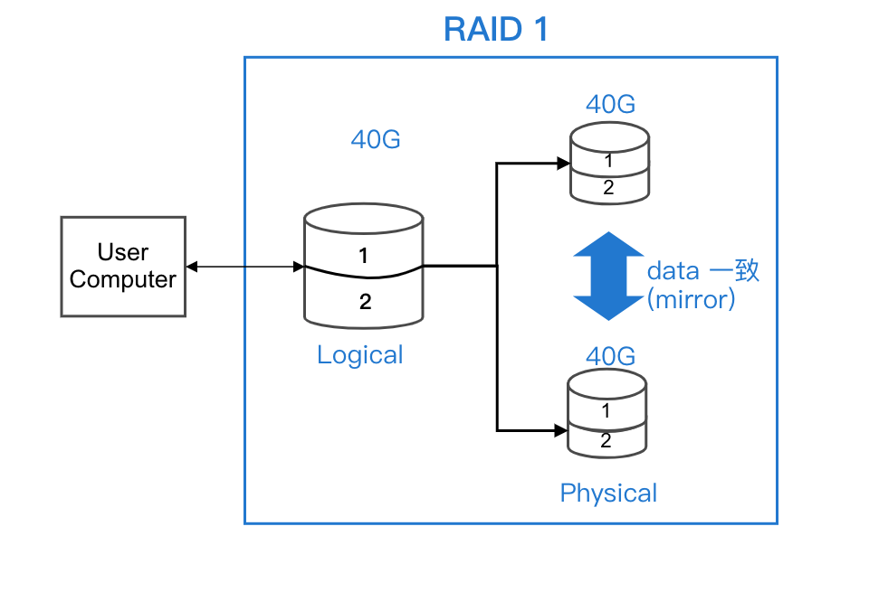
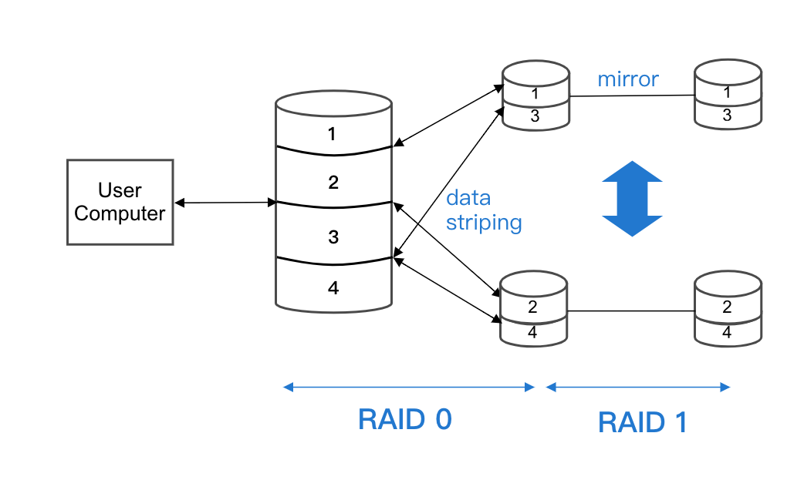
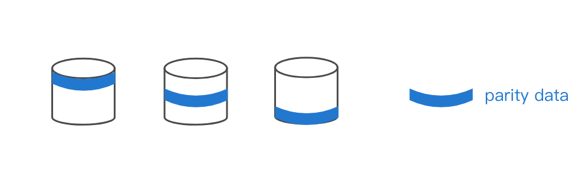

Chapter3-作業系統-磁碟管理-part3
Jul 2, 2021
3.9 磁碟管理 (Disk Management)
目錄
- Free space management
- Link list
- Combination
- Counting
- Allocation Method (配置方法)
- 連續性配置 (contiguous allocation)
- 鏈結式配置 (linked allocation)
- FAT (file allocation table)
- 索引配置 (index allocation)
- Disk structure**
- Disk access time**
- Disk scheduling**
- FCFS
- SSTF
- SCAN
- C-SCAN
- LOOK
- C-LOOK
- 補充
- RAID
- RAID 的種類
- RAID1
- RAID0+1
- RAID2
- RAID3 vs RAID4
- RAID5
- RAID6
- Summary
RAID Redundant Array of Independent Disks 磁碟陣列
- Why RAID?
- CPU 和 disk I/O 速度不對等
- 資料安全性, 可靠性議題
- Solution:
- 採用 "data striping" 資料切割：指將 data 分成幾個等分, 同時存到不同 disk 之中, 以達平行 I/O 之效
- RAID:
- Def: 指將多顆 physical disk, 組成一顆 logical disk 之後, 以達提高 I/O 效能跟增加資料的可靠性
- 圖：
RAID 的種類
- RAID 0 (striping RAID)
- 以效能導向
- 速度最快的 RAID
- 沒有 fault tolerant
- Cost 低
- 至少需 2 顆 disk
- 圖：
- RAID 1 (mirror RAID)
- 至少有 ≥ 2 顆 disk 存相同的 data
- 具 fault tolerant 特色
- Cost 高 (浪費一半 space)
- Read 效益不佳, write 較差
- 至少需 2 顆 disk (資料保護)
- 圖：
- RAID 0+1 (01) speed 快 > RAID 10
- 兼具 speed up + fault tolerant
- Cost 極高
- 至少需 4 顆 disk
- 補充：RAID 1+0 (10)
- 先做 mirror, 在做 striping
- 相較下, 此種方法可靠性更佳, 故現在較常用此
- 圖：
- RAID 2 (被 RAID 3 ~ 5 取代)
- 採用 "ECC" (Error Correcting Code) 技術, 達容錯效果
- RAID 3 vs RAID 4
|RAID 3|RAID 4|
|--|--|
|以 "bit" 為切割單位 (太頻繁)|以 "block" 為單位|
|效能較差|效能較好|
- 共同特色：
- 採 parity check 做 data 的可靠性機制
- 會有一顆專門放 parity 的 disk => 會成為效能上的瓶頸
- 同時允許一顆 disk 損壞依舊可以復原
- 圖：

- RAID 5 => 同 RAID 4, 但將 parity data 平均在各 disk 之上
- 圖：
- 小比較：
| RAID |
Speed |
單位 |
parity data |
| 3 |
慢 |
bit |
集中 |
| 4 |
中 |
block |
集中 |
| 5 |
快 |
block |
分散 |
- RAID 6
- 採 "parity check" + "read soloman code" => 可允許同時 2 顆 disk 損壞, 仍可恢復
- 可靠性優於 RAID 3 ~ 5
Summary
| RAID |
至少 disk 數 |
Speed |
Cost |
| 0 |
2 |
快 |
低 -> striping |
| 1 |
2 |
慢 |
高 -> mirror |
| 0+1 |
4 |
快 |
最高 |
| 3 |
3 |
居中 |
居中 -> parity check |
| 4 |
3 |
居中 |
居中 -> parity check |
| 5 |
3 |
居中 |
居中 -> parity check |